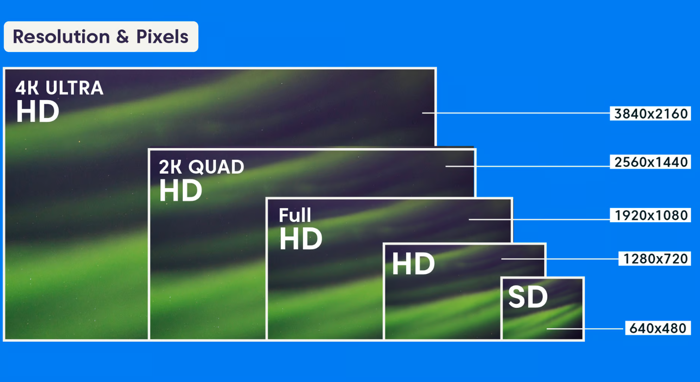
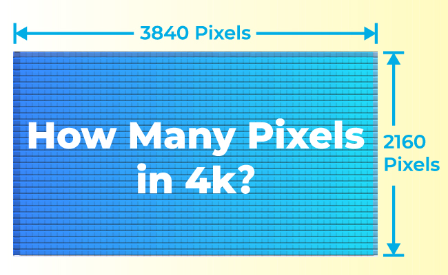
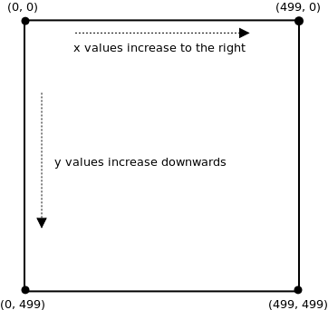
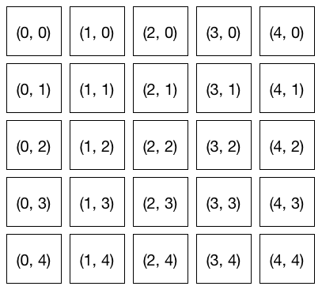
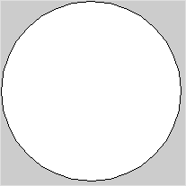
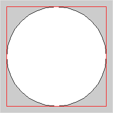
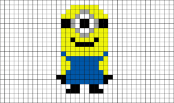

Coordinates and Modes¶
In these notes you will learn:
- How screen resolutions are specified.
- How to change Processing‘s drawing modes.
- How to specify the coordinates of points on the screen.
Screen Resolution¶
In Processing, the graphical output window screen is treated as a rectangular grid of pixels. A pixel is the smallest region of color that we can change. When we talk about a point on the screen, we usually mean a pixel.
 {kind=link}
{kind=link}
The width and height of the screen in pixels is known as its resolution. For example, an ordinary monitor for a desktop computer might have a resolution of 1920 x 1200 pixels, i.e. the screen has 1920 columns of pixels, and 1200 rows of pixels (for a total of \(1920 \times 1200 = 2,304,000\)). In contrast, an iPhone 5 has a resolution of 750 x 1344 pixels, while earlier iPhones have resolutions as low as 320 x 480.
In general, the more pixels a screen has, the sharper and more detailed the images it can display. However, the number of pixels per inch is also important. For instance, text that looks fine on a medium-resolution desktop monitor might be unreadable on a high-resolution, high pixel per inch, laptop monitor.
Making programs work on screens with different resolutions is tricky, and so we will mostly ignore that issue in this course and assume that our programs will always be displayed on a monitor with at least 500 x 500 pixels.
While ordinary computer monitors usually have rectangular pixels arranged in a rectangle, there are other possibilities. For example, some buses have so- called flip disc displays consisting of circular pixels. Or you could design your own circular array of colored LED’s that you turn on and off using an Arduino micro-controller.
Screen Coordinates¶
Similar to mathematics, Processing uses 2-dimensional (x, y) coordinates,
also known as Cartesian coordinates, to label every
pixel on the screen: x is the column and y is the row.
Suppose the screen is 500 pixels wide and 500 pixels high. Then the pixel at the upper-left corner is (0, 0), and the pixel at the lower-right corner is (499, 499).
{kind=link}
Why is the bottom-right corner (499, 499) instead of (500, 500)? The reason is that we number pixels starting at 0 instead of 1. For example, if the screen were 5 x 5 pixels, then the pixels would have these coordinates:
{kind=link}
You can see that the lower-right corner is (4, 4) and not (5, 5).
As the diagram above shows, the x-values increase from left to right, and the y-values increase from top to bottom. Unfortunately, that’s not quite how coordinates work in mathematics. In math class, the y-values increase in value as you go from bottom to top. This can be confusing if you are using a mathematical equation to draw a shape in Processing.
Example: Mirrored Drawing¶
This program draws an ellipse wherever the mouse pointer goes:
void setup() {
size(500, 500);
}
void draw() {
ellipse(mouseX, mouseY, 10, 10);
}
With a bit of arithmetic, we can create a mirror effect:
void setup() {
size(500, 500);
}
void draw() {
ellipse(mouseX, mouseY, 10, 10);
ellipse(500 - mouseX, mouseY, 10, 10); // reflected point
}
In this program, every time draw() is called two circles are drawn: one at
the mouse position, and one at the mouse position reflected through the
vertical center line of the screen. Note the coordinates of the second circle:
it’s centered at (500 - mouseX, mouseY).

Drawing Modes¶
When you call ellipse(0, 0, 200, 200), it draws a circle centered at
location (0, 0):
{kind=link}
Since (0, 0) is the upper-left corner of the screen, only a quarter of the circle is visible: three-quarters of it are off-screen.
If you want to, you can change how Processing positions a circle using the
ellipseMode function. For example, this code sets the upper-left corner
of the ellipse at (0, 0):
ellipseMode(CORNER);
ellipse(0, 0, 200, 200);
Now the entire circle is visible:
{kind=link}
The “corner” of the ellipse means the corner of the smallest rectangle that can be drawn around the ellipse (and whose edges are parallel to the sides of the screen). This surrounding rectangle is known as the bounding box for the ellipse, and it’s a common way to specify the size and position of a graphical object.
{kind=link}
Rectangles drawn with rect(x, y, width, height) also have a mode that you
can set with rectMode. By default, the (x, y) in a call to rect is the
location of the rectangle’s upper-left corner. You can change it to be the
center like this:
rectMode(CENTER);
rect(0, 0, 50, 50);
What drawing mode to use is up to you. You never need to change it, but sometimes it might be convenient. We will occasionally change the drawing mode when it is useful.
Vector Graphics¶
The pixel-based images on our monitors are sometimes called bit-mapped images. One of the basic properties of a bit-mapped image is that if you zoom in on it far enough, you will start to see the individual pixels as big blocks.
{kind=link}
Another interesting approach to specifying graphics is to use geometric shapes other than just squares/rectangles to represent the basic elements of a drawing. For instance, scalable vector graphics is a graphics format that specifies images using, among other things, descriptions of geometric shapes. For example, an SVG square could be specified like this:
<svg xmlns="http://www.w3.org/2000/svg" version="1.1">
<rect width="150" height="150" fill="rgb(0, 255, 0)"
stroke-width="1" stroke="rgb(0, 0, 0)" />
</svg>
Instead of specifying each pixel (and its color) for the square, the dimensions of the square are given.
The big advantage of a format like SVG is that you can zoom in, or out, as far as you like and there need not be any pixelization like you see with bit-mapped graphics.
While SVG is meant for image files, it is possible to have a physical monitor that uses a kind of vector graphs. Vector monitors is a non-bit-mapped screen occasionally used with computers. Instead of using a grid of pixels, vector monitors draw everything with lines. Some classic video games, such as Asteroids (sample video), use vector’s displays which results in their unique look. In the early 1980s you could even buy the Vectrex home game system that came with a built-in vector monitor (video review).
We won’t be using SVG, or vector monitors, in this course.
Questions¶
- What is a pixel?
- How many pixels are there on a screen with a resolution of 1920 x 1200? 640 x 400?
- Explain why slanted lines sometimes look jagged when displayed on a computer monitor.
- Describe the differences between the Processing screen coordinate system, and the coordinate system normally used in mathematics.
- Suppose you are working with a Processing screen that is 640
pixels high and 400 pixels wide. What, exactly, are the
coordinates of the point at:
- The upper-left corner?
- The upper-right corner?
- The lower-right corner?
- The lower-left corner?
- The middle of the screen?
- The
ellipseModefunction has more modes than are mentioned in the text. What are all the modes forellipseMode?
Programming Questions¶
Write a program that draws 5 circles on a 500 x 500 screen at these locations:
- the upper-left corner
- the upper-right corner
- the lower-left corner
- the lower-right corner
- the middle
Make sure the circles are entirely visible, i.e. don’t let any part of them go off the screen.
Write a program that draws a circle and its bounding box, both centered in the middle of the screen. The circle should just touch the middle of each of the four sides of the box.
Make the size of the circle and box change with respect to the mouse pointer (i.e. use
mouseXandmouseYto set their width and height) so that they get bigger or smaller when the mouse moves. They should always stay centered in the middle of the screen.Modify the mirror-drawing program in the notes so that the circles drawn by the user are reflected through the horizontal center line.
Modify the mirror-drawing program so that three reflected circles are drawn (so there will be four circles drawn simultaneously). The three circles should reflect through:
- the horizontal center line
- the vertical center line
- both the horizontal and vertical center line